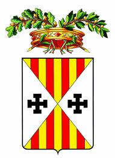

Province of Catanzaro
Catanzaro Province is located just south of Cosenza Province. It is the slimmest area of Italy - just 50 kilometers across from sea to sea. Because of this, the Italians sometimes refer to it as "La Terra di Due Mari". Catanzaro (city) is the the capital of Catanzaro Province as well as all of Calabria. It overlooks the Gulf of Squillace. It was founded in the 9th century by the Byzantines to control the mountain pass between the Ionian Sea and the Tyrhenian Sea. The name Catanzaro origionates from the Byzantines who named it "Katartario" which means spinners of silk. Since the 11th century Catanzaro has been known for it's production of fine lace and silkworm breeding which has been exported throughout Europe. For centuries the Vatican has ordered it's laces and linens for priest vestments as well as many of the Royal Houses of Europe. It's history goes back to ancient times when it began as a Greek settlement. Most of the province was a part of the Magna Graecia.
Catanzaro Province currently consists of 76 comuni (towns). Prior to the 1990's Calabria consisted of 3 provinces; Cosenza, Catanzaro and Reggio Calabria. In the 1990's Catanzaro Province was split into 3 Provinces. The new provinces of Vibo Valantia and Crotone were carved out of Catanzaro Province. Vibo Valentia and Crotone Provinces were set up by national law on 6 March 1992 and officially became provinces on 1 January 1996. Prior to that Catanzaro was the largest province in Calabria. You can access the official website of the province here.